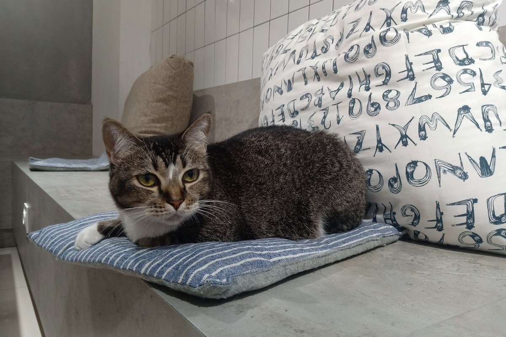

ABOUT
Perlu kalian ketahui, Calicoffice ini biaya masuknya gratis atau tidak dipungut biaya. Selain itu, tidak ada biaya per jam untuk dapat bermain dengan kucing-kucing yang ada di sana. Berbeda dengan beberapa kafe lain yang meminta bayaran untuk dapat bermain dengan kucing-kucing yang ada di kafe mereka. Mengapa demikian? Hal ini dikarenakan keunikan dari kafe. Kafe yang sekaligus merupakan working place ini mengadopsi kucing-kucing (rescue cat) yang ada di BSD untuk kafe mereka.
Calicoffice menawarkan kenyamanan dan juga interior yang sangat bagus. Tempat yang instagram able ini membuat para pengunjung ingin berfoto ria dan hasilnya untuk di posting ke Instagram mereka. Kafenya dibuat seperti tempat untuk berfoto karena cukup banyak spot bagus untuk berfoto. Selain bagus, tempat ini juga mengutamakan kenyamanan. Dengan demikian, para pengunjung dapat merasa seperti di rumah sendiri. Pengunjung dapat dengan nyaman bermain dengan kucing-kucing, mengerjakan tugas, serta bekerja di kafe ini.
Untuk kenyamanan kucing-kucing yang ada di sana, kafe tersebut memiliki beberapa peraturan. Pertama, dilarang untuk membawa makanan dan juga minuman dari luar. Kedua, pengunjung diminta untuk tidak mengejar, melompat, atau berlari di dalam kafe. Ketiga, pengunjung dihimbau untuk tidak membangunkan kucing yang sedang tidur.
Keempat, kucing harus diperlakukan dengan baik dan jangan diangkat jika kalian merasa kurang nyaman. Anak kecil yang datang harus di supervise. Pihak kafe ini tidak bertanggung jawab jika kucing menggigit atau mencakar. Namun, mereka menyediakan First Aid bila dibutuhkan. Untuk dapat membantu biaya perawatan kucing-kucing yang telah diselamatkan, pengunjung dihimbau agar membeli salah satu makanan atau minuman saat berkunjung.
Manager Calicoffice Uswatun Hasanan menjelaskan, para tamu tidak perlu khawatir dengan kebersihan kafe meski bergabung bersama kucing."Kita setiap minggunya dimandiin, kita minta ke petshop-nya dipendekin rambutnya dan disisirin, agar tidak rontok," ujarnya (dikutip dari travel.tribunnews.com)
Para pengunjung tidak perlu khawatir untuk masalah kebersihan kafe tersebut. Untuk buang air, kucing-kucing itu sudah dilatih agar melakukannya di dalam kotak pasir yang sudah disediakan. Selain itu, pasa staff juga akan memantau dan membersihkannya langsung agar pengunjung tetap merasa nyaman.